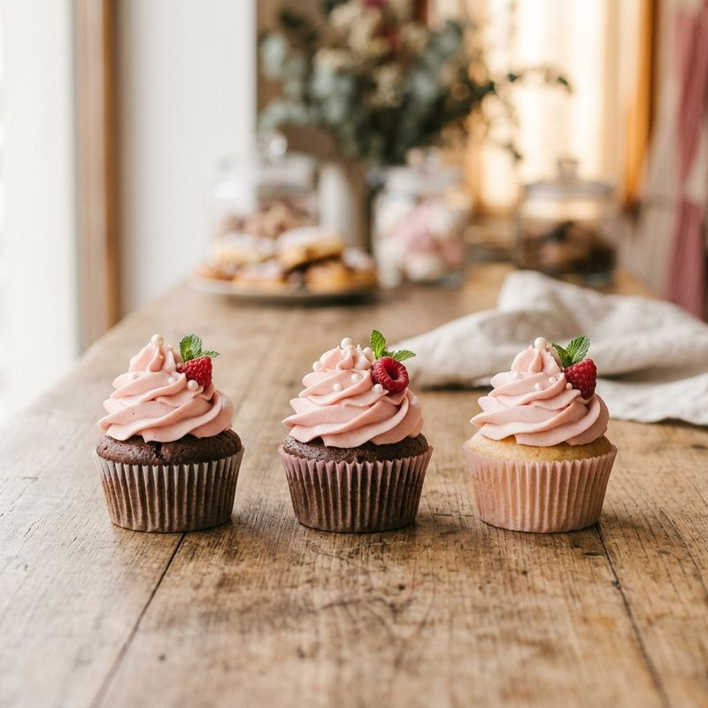
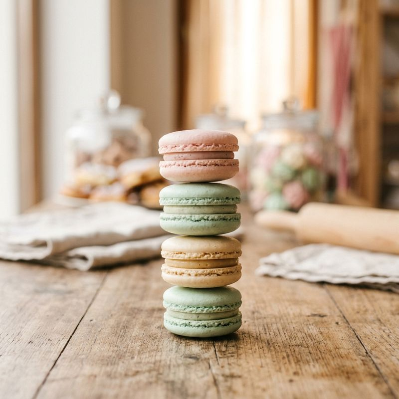

Bolo de chocolate com morangos
Camadas macias de chocolate,recheio cremoso e morangos frescos
Confeitaria Doce Encanto
Bolos, cupcakes, macarons, e brigadeiros gourment feito com
A Doce enacanto nasceu na cozinha de casa,com receitoas da família e uma paixão:transformar momentos simples em momentos inesquecíces.
Hoje,cada doce é decorado a mão,um a um,para que o cuidado artesanal apareça no primeiro olhar.
Camadas macias de chocolate,recheio cremoso e morangos frescos

Massa fofinha coberta com Chantilly,Framboesa e uma folha de hortelã.

Casquinhas crocantes e recheio delicado, em tons suaves.

Chocolate de verdade, enrolado à mão e finalizado com coberturas especiais.
Acompanhe um pouco do nosso dia a dia na cozinha.